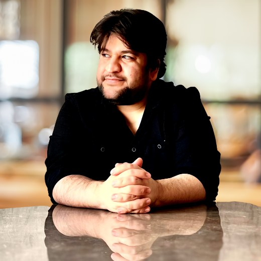
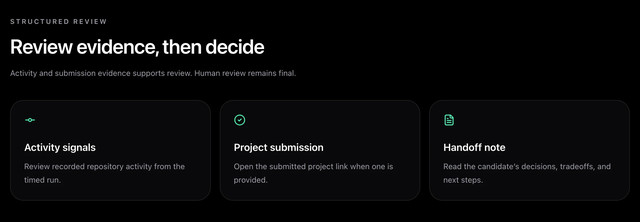
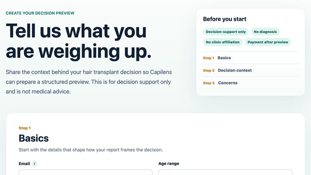
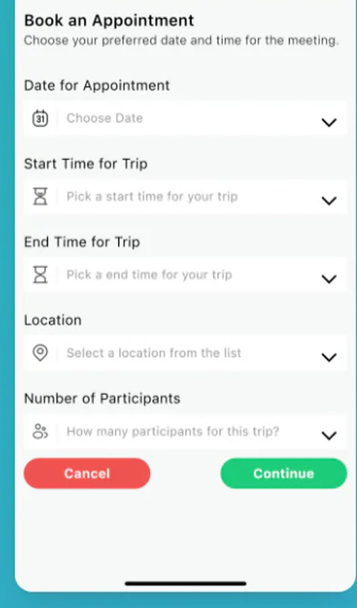

Software Engineer & Founder
Muhammed Gazali Yeşilmen
I build software products from idea to production. My current focus is DevMarathon, a platform helping teams evaluate developers through real engineering work.

02 / Featured venture
Founder & Product Engineer
DevMarathon
Real engineering work. Clearer technical evaluation.
CVs and coding quizzes show only part of the picture. DevMarathon helps teams evaluate developers through realistic software challenges, inspectable work and AI-assisted technical evaluations. Human reviewers make the final decision.
I’m building it as founder and product engineer. The product also supports individual developers through Solo Marathon.
Explore DevMarathon
03 / Active venture
Capilens
Preparation before choosing a clinic.
I’m also building Capilens: an AI-assisted, patient-first research and preparation experience for people exploring hair-transplant options in Türkiye. It helps users organise information and prepare better questions.
Decision support only. Capilens is not a clinic and does not provide diagnosis or medical advice.
Visit Capilens
A patient-first research and preparation experience.
04 / Previous venture · 2022–2025
AyoTravel
A travel marketplace, built for mobile.
At AyoTech, I was founder and lead mobile engineer for AyoTravel, a cross-platform Flutter marketplace. My work covered booking, authentication, real-time chat, offline sync, payment integrations and production delivery.
Founder & Lead Mobile Engineer

Mobile engineering, integrations and product delivery.
05 / About & approach
From mobile engineering to product building.
My background is in mobile engineering. I’ve worked on marketplaces, fintech applications and privacy-focused software, across both product and technical responsibilities.
Today, I’m extending that experience into AI-assisted products, with DevMarathon as my main focus. My work draws on a practical foundation in application architecture, authentication, payments and real-time systems.
06 / Selected experience
The work behind the products.
-
Current
DevMarathon & Capilens
Founder & Product Engineer
Product direction and engineering for my current ventures.
-
SendPal Global Inc.
Technical Product Advisor · Part-time
Advising on marketplace architecture, escrow, identity and trust.
-
AyoTech Software Technologies Inc.
Founder & Lead Mobile Engineer
Led mobile engineering across marketplace flows and product delivery.
-
SNT Software & Financial Technologies Inc.
Flutter Developer
Built real-time market-data, portfolio and trading features for a fintech application that later evolved into Infox.
-
Eywin Information Technologies
Flutter Developer
Developed privacy-focused Android and iOS software and personal-data-management features.
Education
Kastamonu University
Computer Engineering
07 / Contact
Let’s connect.
I welcome conversations with founders, partners and engineers about products, technology and potential collaborations.